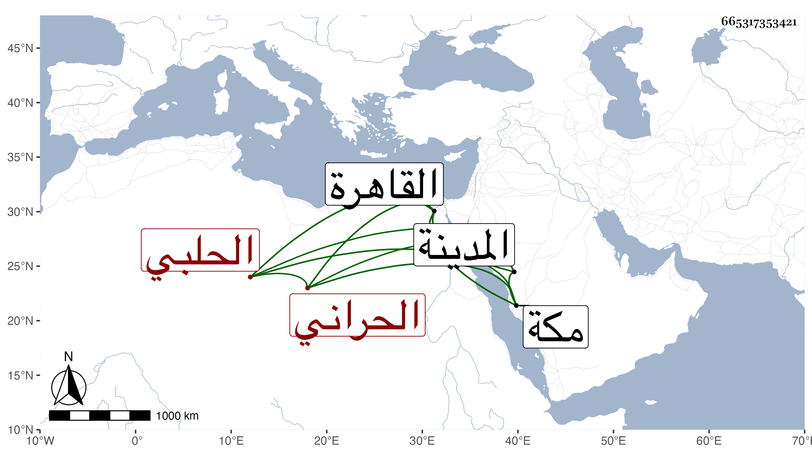

0902Sakhawi.DawLamic.ITO20230111-ara1.EIS1600.665317353421
Biography ID: 665317353421
176
محمد بن معالي بن عمر بن عبد العزيز بن سند الشمس الحراني الحلبي ويعرف بابن معالي ، ولد تقريبا سنة اثنتين وأربعين وسبعمائة كما بخطه واشتغل قليلا وتنبه وكان يذاكر بأشياء وسمع من البدر أحمد بن محمد بن الجوخي وابن أميلة والصلاح بن أبي عمر ومحمود بن خليفة وابن قواليح وغيرهم وسكن القاهرة زمنا وأكثر الحج والمجاورة . قال شيخنا في معجمه : لقيته بالقاهرة وسمعت منه بالمدينة النبوية ترجمة الداهري من مشيخة الفخر بن البخاري . ومات سنة تسع بمكة يعني في ذي القعدة رحمه الله ، وذكره في إنبائه أيضا . وترجمه الفاسي في مكة وقال إنه جاور بها نحو عشر سنين متوالية وبين ما علمه من مسموعاته ، وكذا ذكره ابن فهد في معجمه ، والمقريزي في عقوده قال واستفدت منه وتأدبت به ونعم الشيخ ولم أر من عين مذهبه منهم نعم في نسختي من معجم شيخنا الحنبلي وجوزت تحريفها من الحلبي ولكن بعدها شامي فالله أعلم .
